جمعية بهجة العمانية للأيتام
في رمضان… اجعل لعطائك أثرًا في حياة يتيم
رمضان شهر الرحمة، وشهر تتضاعف فيه أبواب الخير. اجعل من زكاتك وصدقتك وكفارتك سببًا في إدخال الفرح والطمأنينة إلى بيوت الأيتام، وأتمّ تبرعك بأمان عبر القنوات الرسمية لجمعية بهجة العمانية للأيتام.
زكاتك… صدقتك… كفارتك… قد تكون فرحةً ينتظرها بيتٌ محتاج.
- جمعية رسمية منذ 2014
- دفع آمن عبر SmartPay من بنك مسقط
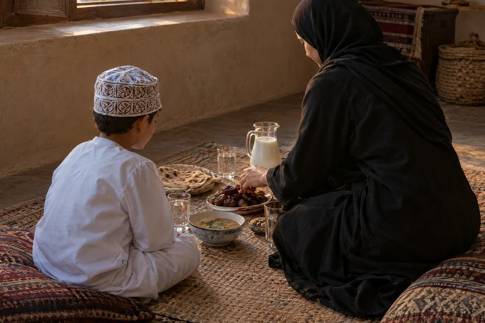
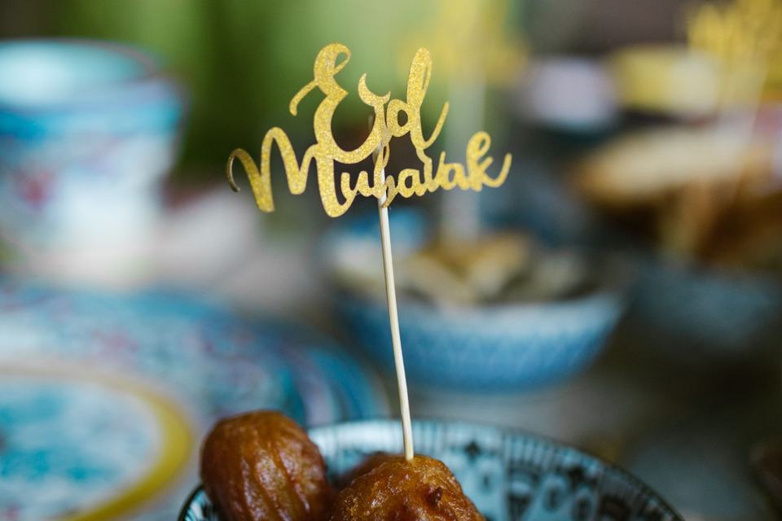
رمضان فرصة… فلا تدعها تمر دون أثر
رمضان ليس شهر الصيام فقط… إنه شهر الرحمة، والإحسان، والصدقة، ومضاعفة الأجر.
وفي هذا الشهر المبارك، قد يكون عطاؤك سببًا في أن تدخل المواد الغذائية إلى بيتٍ يحتاجها، أو أن تصل زكاتك إلى مستحق، أو أن يجد يتيمٌ وأسرتُه من يقف إلى جانبهم.
لا تستصغر ما تقدّم؛ فربّ صدقةٍ تبدو صغيرة في عينك، تكون عظيمة عند الله.
اجعل لك في رمضان صدقةً لا تنساها، وأثرًا يبقى بعد انقضاء الشهر.
وما تقدموا لأنفسكم من خير تجدوه عند الله
وَمَا تُقَدِّمُوا لِأَنفُسِكُم مِّنْ خَيْرٍ تَجِدُوهُ عِندَ اللَّهِ
[البقرة: 110]
كل زكاة، وكل صدقة، وكل إطعام، وكل كفارة تؤديها بإخلاص… هي باب من أبواب الخير.
وفي رمضان، حين تجتمع العبادة مع الإحسان، يصبح عطاؤك فرصة لتخفيف حاجة، وإدخال سرور، ورعاية أسرة.
أعطِ ابتغاء وجه الله… ودع الله يكتب لك الأجر.
أبواب العطاء
أي باب من أبواب الخير تفتح اليوم؟
اختر ما يناسبك من أبواب العطاء، واجعل عطيتك خالصةً لله.
-
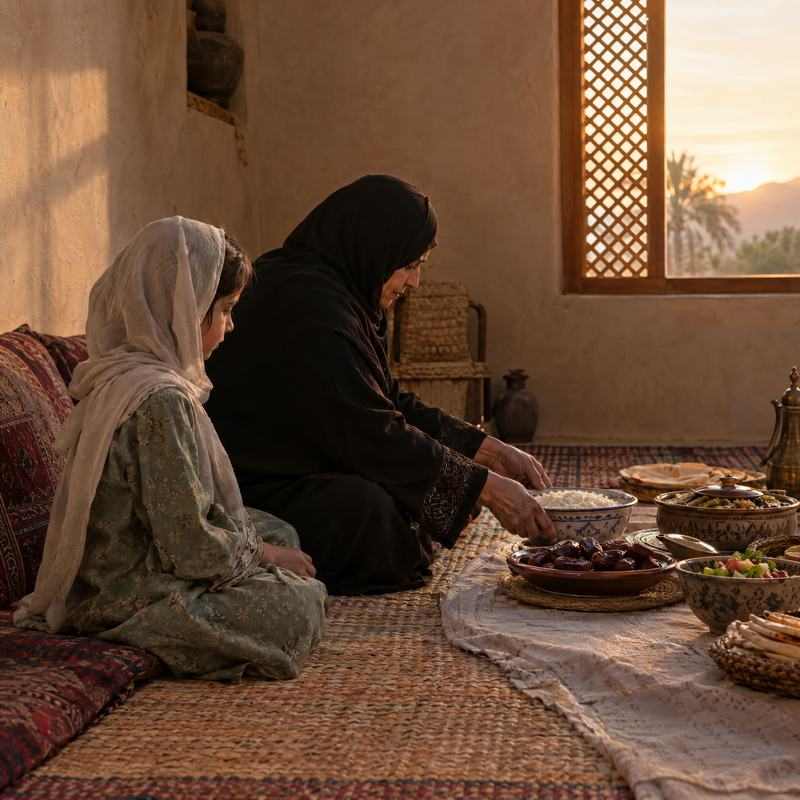
-
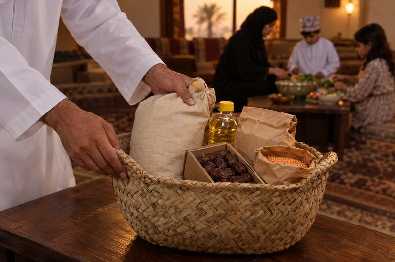
-
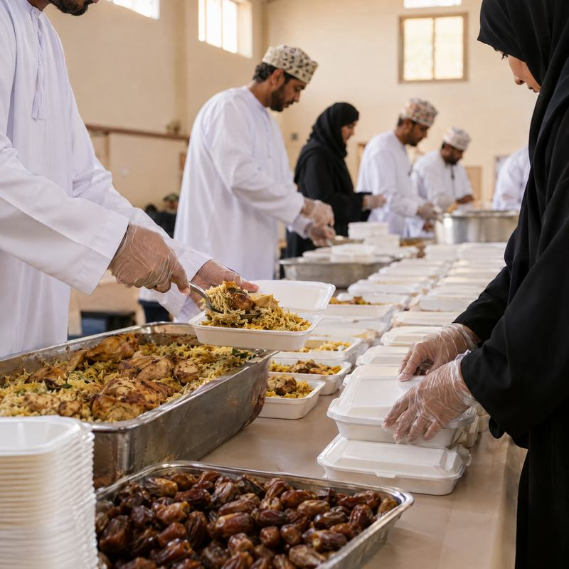
-
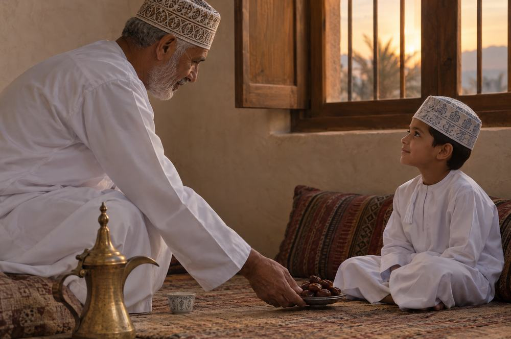
-
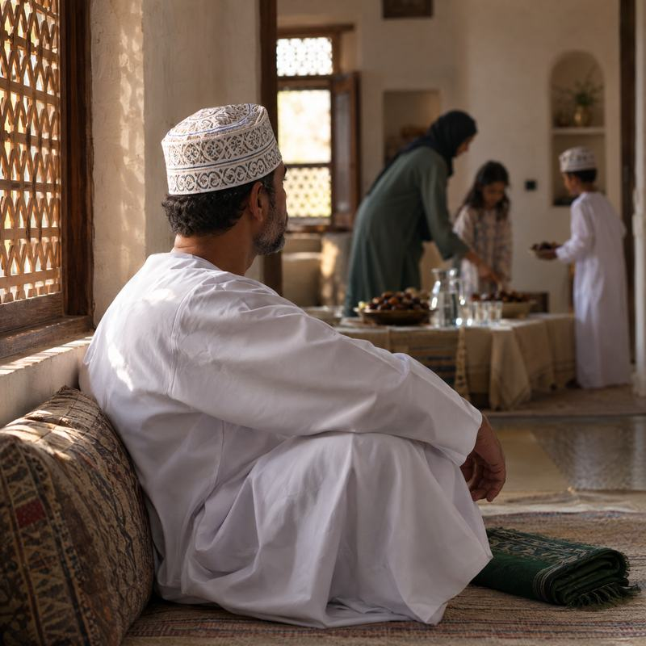
يمكن أن تصبح سنداً.
الزكاة
زكاتك… طهارةٌ لمالك، وخيرٌ يصل إلى مستحق
أدِّ زكاة مالك لصالح الأيتام المسجلين لدى جمعية بهجة، عبر الصفحة الرسمية المخصصة للزكاة.
استخدم أدوات الجمعية الرسمية لحساب زكاتك، ثم أكمل إخراجها عبر القنوات الرسمية.
للاستفسارات الشرعية التفصيلية، يرجى الرجوع إلى جهات الإفتاء المختصة.
احسب زكاتك
استخدم أدوات جمعية بهجة الرسمية لحساب الزكاة قبل إتمام التبرع.
احسب زكاتك يدعم تطبيق بهجة الرسمي حساب الزكاة.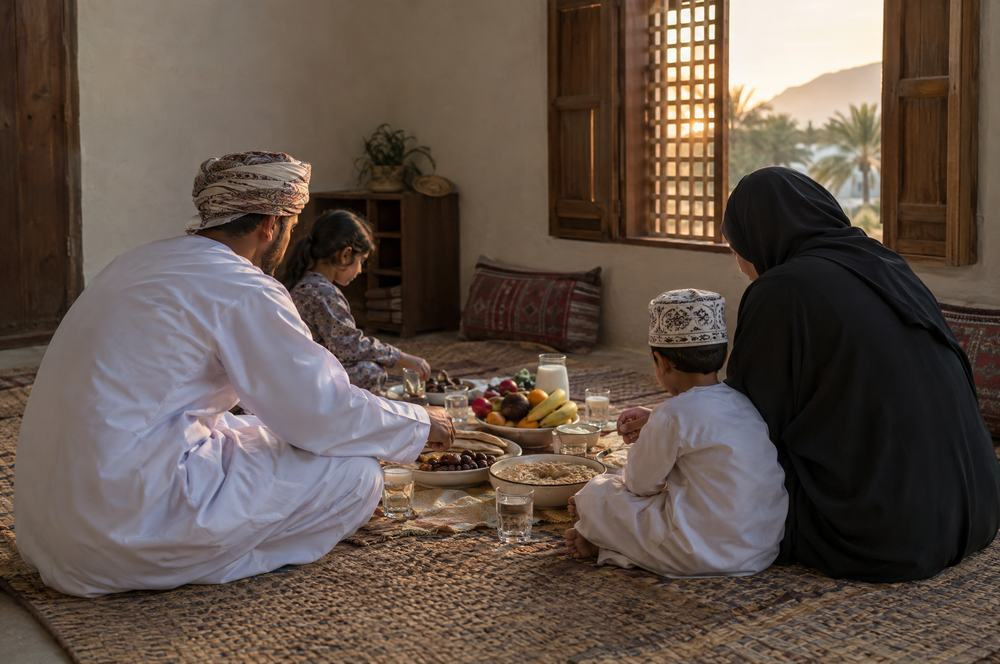
السلة الرمضانية
سلة رمضانية… تفرح بها أسرة
في رمضان، تجتمع العائلة حول مائدة الإفطار، لكن هناك أسرًا قد تثقلها تكاليف الطعام واحتياجات الشهر. بسلتك الرمضانية، يمكنك أن تكون سببًا في أن تستقبل أسرة من أسر الأيتام رمضان بمزيد من الطمأنينة.
مشروع سنوي تقدّم فيه جمعية بهجة سلة غذائية لأسر الأيتام المسجلة لديها، توزَّع مرة واحدة في شهر رمضان المبارك في مختلف ولايات المحافظة.
قيمة السلة في حملة رمضان 2026م / 1447هـ، بحسب إعلان الجمعية الرسمي.
ساهم في سلة رمضانية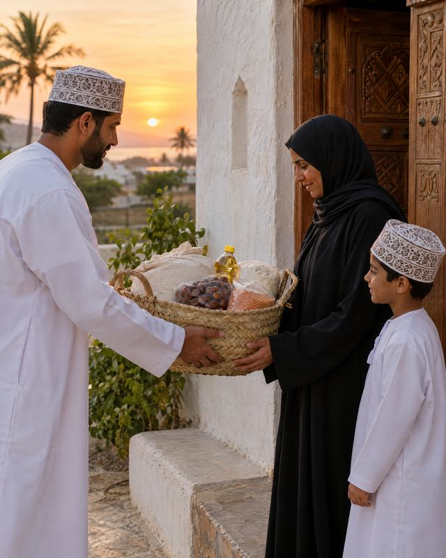
الكفارات
كفارتك… طاعةٌ تُؤدّيها، وخيرٌ يصل إلى محتاج
قد تجب عليك الكفارة، ويكون أداؤها بابًا من أبواب الإطعام والإحسان. أدِّ كفارتك عبر جمعية بهجة، واختر الطريقة المناسبة وفق المبالغ المعتمدة من الجمعية.
- 15ر.ع كفارة يمين إطعام عشرة مساكين
- 1.5ر.ع عن يوم صيام واحد
- 45ر.ع عن شهر رمضان كاملاً
الصدقة
صدقتك… حيث تكون الحاجة
ليس للعطاء وقت واحد، ولا باب واحد. قد تكون صدقتك طعامًا، أو ماءً، أو تفريجًا لكربة، أو مساعدةً لأسرة، أو دعمًا ليتيم.
اختر المشروع الذي يلامس قلبك، واجعل صدقتك سببًا في فرحة إنسان.
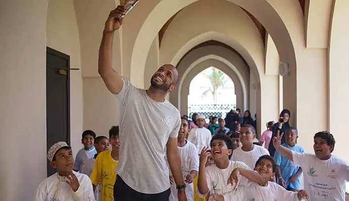
من بهجةكفالة يتيم… أثرٌ يمتد مع الأيام
اليتيم لا يحتاج إلى المال وحده؛ يحتاج إلى من يمد له يد العون، ويعين أسرته، ويمنحه فرصة ليعيش بكرامة وأمل.
«أنا وكافل اليتيم في الجنة هكذا»، وأشار بالسبابة والوسطى، وفرّج بينهما شيئًا.
رواه البخاري (5304)
اجعل لك نصيبًا من هذا الخير، وساهم في رعاية يتيم عبر جمعية بهجة العمانية للأيتام.
اكفل يتيمًاإلى أين يذهب عطاؤك
أبواب من عطائك
-
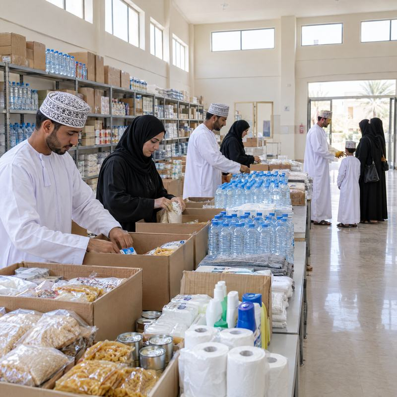
-
-
-
-
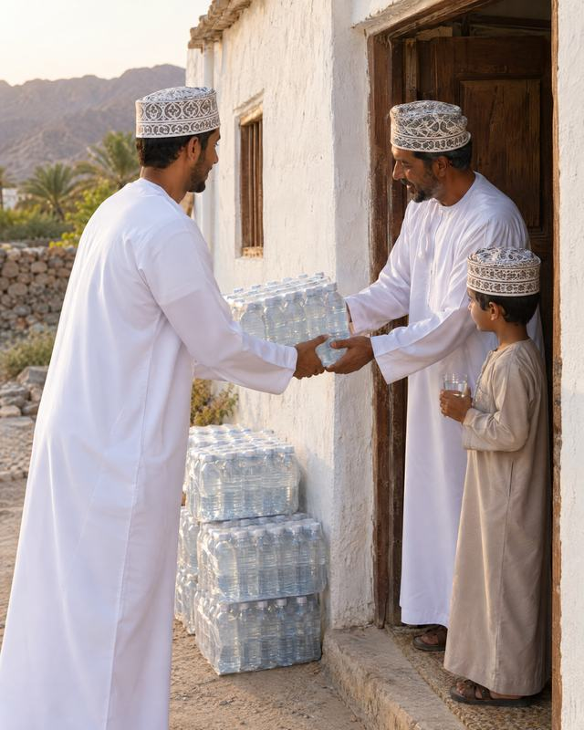
-
الصور المعلَّمة «من بهجة» من مواد الجمعية المنشورة؛ أما بقية الصور فهي صور تعبيرية مُولّدة بالذكاء الاصطناعي، ولا تمثّل أشخاصًا حقيقيين أو مستفيدين من الجمعية.
حين تعطي… اطمئن إلى أين يصل عطاؤك
جمعية بهجة العمانية للأيتام جمعية رسمية تعمل على رعاية الأيتام والأرامل في ولايات محافظة ظفار، تحت مظلة وزارة التنمية الاجتماعية. تأسست الجمعية في 10 فبراير 2014، وتعمل وفق المرسوم السلطاني رقم 14/2000، كما أن مبادرات الجمعية مدرجة على منصة جود التابعة لوزارة التنمية الاجتماعية.
- 2014سنة التأسيس
- 14/2000المرسوم السلطاني
- ISOشهادة الأيزو2023
- 7جوائز وتكريمات2013 – 2024

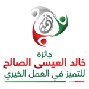
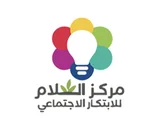
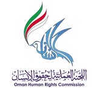

الجوائز والشهادات كما تعرضها الجمعية على موقعها الرسمي، مع سنواتها.
الدفع يتم في صفحات الجمعية الرسمية
لا تُدخل بيانات بطاقتك في هذه الصفحة؛ يتم الدفع في صفحات الجمعية الرسمية.
- الموقع الرسمي لجمعية بهجة
- SmartPay من بنك مسقط
- تطبيق بهجة الرسمي
- التحويل البنكي
أنشطة وشراكات تخدم الأيتام

فعالية تعليمية للأطفال 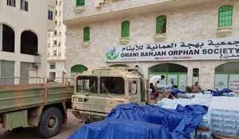
مساعدات عينية أمام مقر الجمعية 
توقيع اتفاقيات تمويل — مارس 2021
طرق التبرع
عطاؤك يصل عبر قنوات رسمية وآمنة
اختر الطريقة التي تناسبك لإتمام تبرعك:
-
الموقع الرسمي
اختر مشروعك وأكمل تبرعك بالبطاقة عبر SmartPay من بنك مسقط.
صفحة التبرعات -
تطبيق بهجة
تبرع، وتعرّف على مشاريع الجمعية، واحسب زكاتك من خلال التطبيق الرسمي.
-
التحويل البنكي
استخدم الحسابات البنكية الرسمية، وتأكد من بيانات الحساب الحالية من خلال قنوات التواصل الرسمية للجمعية قبل التحويل.
بعد الإيداع، يُرجى إشعار الجمعية. تم التحقق بتاريخ .
تجد أرقام الحسابات الحالية لدى قنوات التواصل الرسمية للجمعية، ثم أشعر الجمعية بعد الإيداع.
تحقّق من الحسابات
مساعدة
أسئلة شائعة
كيف أخرج زكاتي عبر بهجة؟
يسعدنا أن تكون زكاتك عونًا للأيتام. يمكنك إخراج زكاة مالك لصالح الأيتام المسجلين لدى الجمعية من خلال صفحة الزكاة الرسمية، وحساب زكاتك عبر أدوات الجمعية الرسمية وتطبيق بهجة. وللاستفسارات الشرعية التفصيلية، يُرجى الرجوع إلى جهات الإفتاء المختصة.
كم تبلغ قيمة السلة الرمضانية؟
قيمة السلة 15 ر.ع في حملة رمضان 2026م / 1447هـ، بحسب إعلان الجمعية الرسمي. والسلة الرمضانية مشروع سنوي تقدّم فيه الجمعية سلة غذائية لأسر الأيتام المسجلة لديها، توزَّع مرة واحدة في شهر رمضان المبارك. يمكنك المساهمة من خلال صفحة السلة الرمضانية.
كم تبلغ الكفارات؟
بحسب المبالغ المعتمدة من الجمعية: كفارة اليمين 15 ر.ع (إطعام عشرة مساكين)، وعن يوم صيام واحد 1.5 ر.ع، وعن شهر رمضان كاملًا 45 ر.ع. يمكنك أداء كفارتك عبر صفحة الكفارات الرسمية.
ما طرق الدفع المتاحة؟
تقبل الجمعية البطاقات الائتمانية وبطاقات الخصم عبر SmartPay من بنك مسقط على موقعها الرسمي، ويمكنك كذلك التبرع عبر تطبيق بهجة أو بالتحويل البنكي.
هل يمكنني التبرع من خلال تطبيق بهجة؟
نعم. يتيح لك تطبيق بهجة الرسمي التبرع والتعرّف على مشاريع الجمعية، كما يدعم حساب الزكاة وخدمات أخرى. حمّل التطبيق من App Store أو Google Play.
هل يمكنني التحويل البنكي؟
نعم. تجد الحسابات البنكية الرسمية للجمعية في قسم التحويل البنكي أعلاه. ننصح بالتأكد من بيانات الحساب الحالية عبر قنوات التواصل الرسمية قبل التحويل، ثم إشعار الجمعية بعد الإيداع.
كيف أتواصل مع بهجة؟
يسعد فريق الجمعية بتواصلك عبر الهاتف: 92877577 · 23289966، أو واتساب 92877577، أو البريد الإلكتروني bahjah1.omani@gmail.com، أو صفحة التواصل الرسمية.
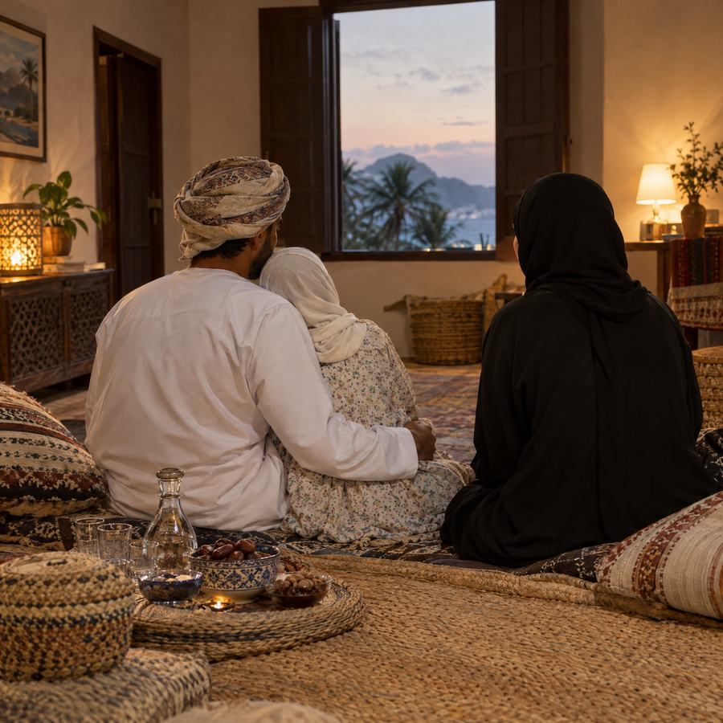
عطاءٌ قد يبدو قليلًا… وأثره عند الله كبير
قد لا تعرف وجه من أسعدته صدقتك، وقد لا ترى أثر عطائك بعينيك… لكن الله يعلم.
فاجعل لك في رمضان صدقة،
وفي مالك زكاة،
وفي عبادتك كفارة،
وفي قلبك رحمةً لمن يحتاجها.
أعطِ ابتغاء وجه الله، واجعل عطاءك سببًا في بهجة بيت.
اللهم تقبّل منا ومنكم صالح الأعمال.